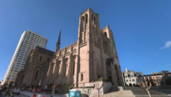

|

|
|
Abstract:
We present a method for automatically creating compact and accurate 3D city
models needed for enhanced Augmented Reality applications. The input data are
panorama images and LIDAR scans collected at street level and positioned using
IMU and a GPS. Our method corrects for the GPS error and the IMU drift to
produce a globally consistent and well-registered data set for the whole city.
We use structure from motion and skyline detection to complement the limited
range of LIDAR data. Additionally, we propose a novel reconstruction technique
that exploits architectural properties of urban environments to create an
accurate 3D city model from incomplete data. Our method is able to process an
entire city, or several terabytes of data, in a matter of days. We show that our
reconstruction achieves higher accuracy than a commercial solution.
|

![[PHOTO]](../../images/knight_small.png)